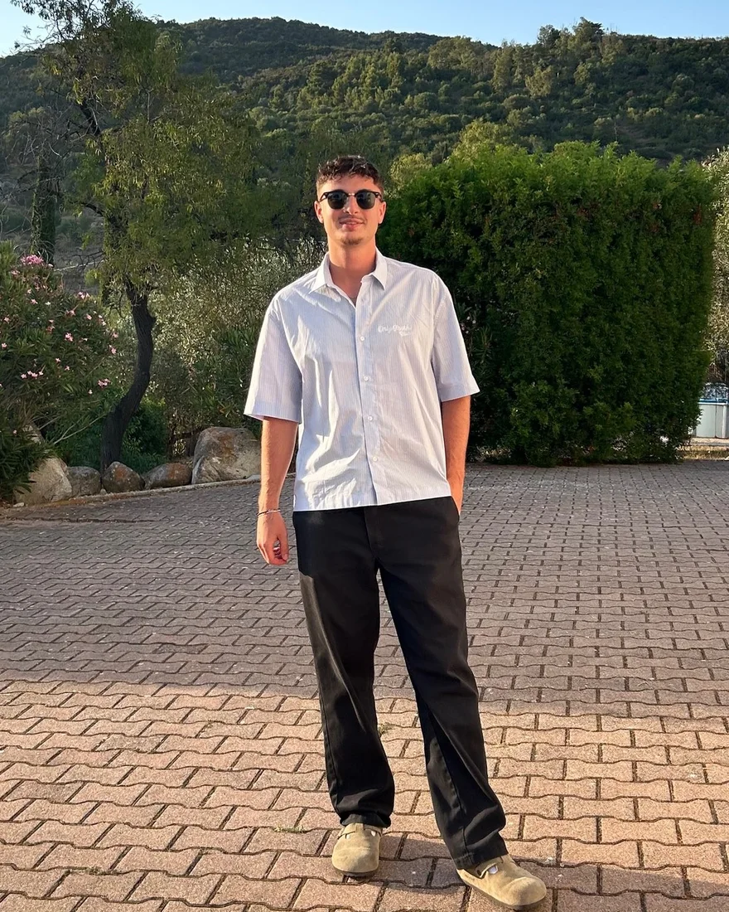

Über mich

Ich bin Alex
Kreativer Kopf, Musikfan, Snowboarder, UI/UX Designer, Coder
Offen, neugierig und gern im Team, bringe ich nicht nur Ideen in ein Projekt ein, sondern auch die Ausdauer, sie umzusetzen. Mich fasziniert, wie Menschen mit Interfaces umgehen und wie diese technisch umgesetzt werden. In verschiedenen Projekten konnte ich schon den ganzen Weg gehen. Vom offenen Problem über Interviews und Usability-Tests bis zum funktionierenden Prototyp.
Gutes Design braucht für mich zwei Dinge: Empathie, um zu verstehen, was Menschen wirklich brauchen, und Struktur, um daraus etwas zu bauen, das funktioniert. Beides bringe ich mit. Die Ausbildung hat mir den Blick für Ziele, Abläufe und Zahlen gegeben, das Studium den Blick für Menschen und Technik.
Am liebsten arbeite ich an Projekten, die etwas Neues wagen. Mich motiviert, wenn aus einer Idee im Team etwas Echtes entsteht.